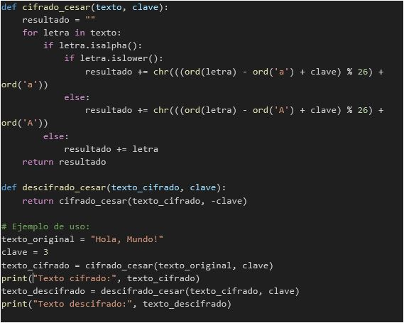

Ramos Magaña Miguel AngelIntroducción a la criptografía 1Soy estudiante de Ingeniería en Sistemas Computacionales. Considero que tengo buenas habilidades en comunicación, trabajo en equipo y toma de decisiones. Me gusta programar en distintos lenguajes y aprender sobre nuevas herramientas. |
Correo gmail: mramosm1700@gmail.com
Correo institucional: mramosm1700@alumno.ipn.com
Correo yahoo: chilito_mika@yahoo.com.mx
Actualmente mis hobbies consisten en:
Algoritmo de CésarEl cifrado César es un algoritmo de cifrado simple que se basa en el desplazamiento de letras en el alfabeto. El cifrado toma su nombre de Julio César, quien supuestamente lo usó para comunicarse de manera segura. El cifrado César es un tipo de cifrado de sustitución, donde cada letra en el texto original se reemplaza por una letra que se encuentra un número fijo de posiciones hacia adelante en el alfabeto.
El proceso de descifrado es similar, pero se aplica un desplazamiento en la dirección opuesta (hacia atrás) para volver al texto original. La clave de descifrado debe ser la misma que se utilizó para cifrar. |
Aquí hay un ejemplo simple en Python de cómo implementar el cifrado César:  |